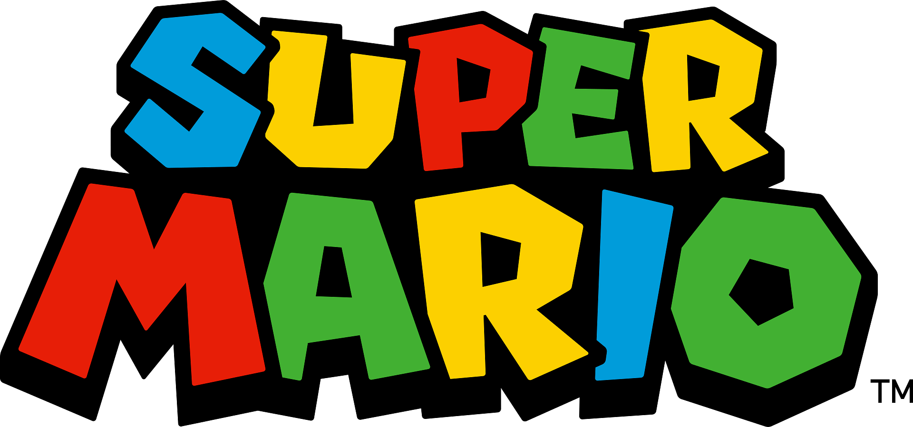
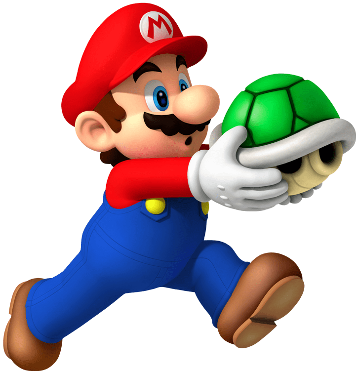
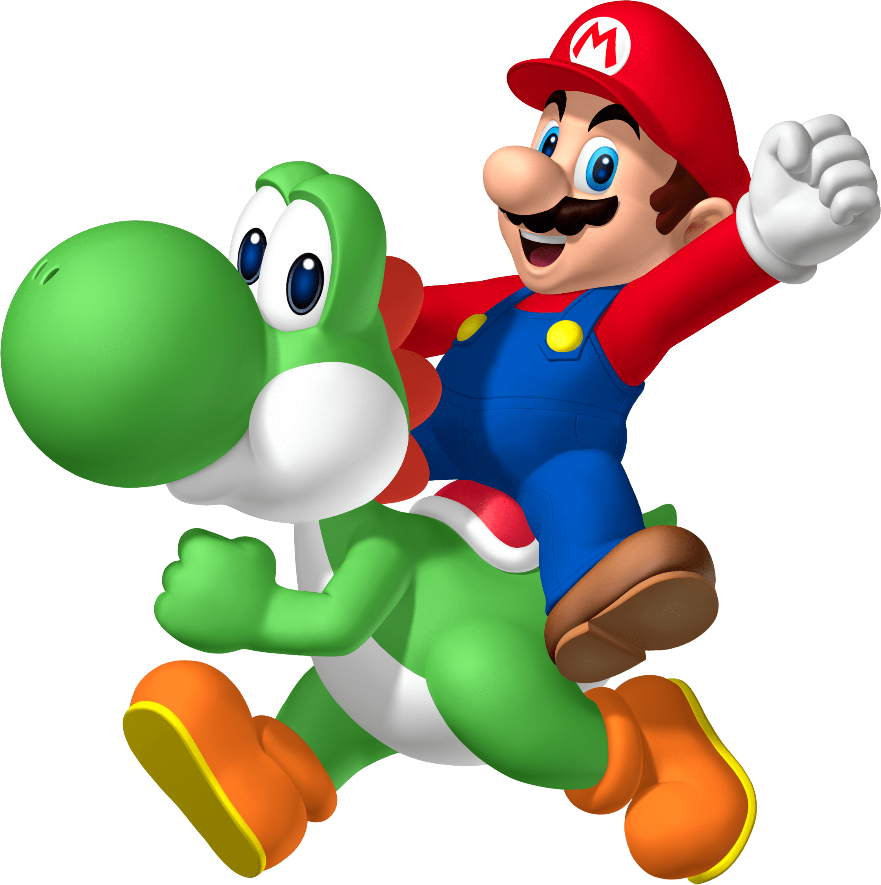
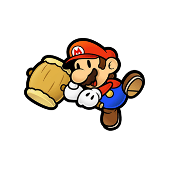

A franquia Super Mario é uma das maiores séries de mídia e videogames do mundo. Criada pela Nintendo e idealizada pelo designer Shigeru Miyamoto, acompanha as aventuras do icônico encanador Mario. A série, que superou a marca de 300 jogos, é o principal pilar da indústria de jogos de plataforma.

O personagem apareceu pela primeira vez no fliperama Donkey Kong (1981), sob o nome de "Jumpman". Apenas em 1983 ele estrelou seu próprio jogo de arcade com o irmão Luigi. O grande marco da franquia, no entanto, foi o lançamento de Super Mario Bros. para o NES (Nintendinho) em 1985. O título estabeleceu o padrão moderno dos jogos de plataforma 2D e definiu o universo do Reino do Cogumelo.


Super Mario Bros